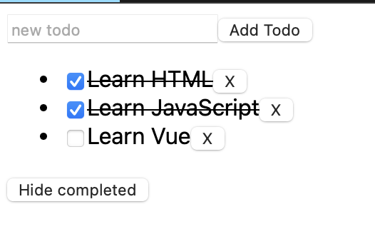

Vue¶
.vue 后缀的文件中。安裝工具
$ npm install -g @vue/cli # 全局安装
$ vue --version
@vue/cli 5.0.8
$ vue create vue_demo # 不支持大写
# 初始化项目
$ cd vue_demo
$ npm run serve # 运行服务
重新启用被弃用的TypeScript Vue Plugin (Volar)拓展
项目配置 & *.vue¶
vue_demo
├── public
├── src # !!! 源码文件
│ ├── assets # 存放静态资源
│ │ ├── .css
│ │ └── .png
│ ├── components # 公共组件
│ │ └── .vue
│ ├── App.vue # 主入口的组件
│ └── main.js # 程式入口
├── ... # 不重要
├── package.json
└── package-lock.json
每一个 *.vue 文件都由三种顶层语言块构成：<template>、<script> 和 <style>，以及一些其他的自定义块
package management package.json¶
npm 是前端开发人员广泛使用的包管理工具，项目中通过 package.json 来管理项目中所依赖的 npm 包的配置。
{
"name": "Your project name",
"version": "1.0.0",
"description": "Your project description",
"main": "app.js",
"scripts": {
"test": "echo \"Error: no test specified\" && exit 1",
},
"author": "Author name",
"license": "ISC",
"dependencies": {
"dependency1": "^1.4.0",
"dependency2": "^1.5.2"
}
}
Ref
模版语法¶
指令是由 v- 开头的一种特殊 attribute。
Single-File Component 的意义
*.vue 是单文件组件，一个 vue 文档就是一个组件。
this来访问组件实例。组件实例会暴露data中声明的数据属性。我们可以通过改变这些属性的值来更新组件状态。
export default{
data(){
// 该组件暴露的数据
},
method:{
// 该组件暴露的函数
},
computed:{
// 计算属性。
// 使用 computed 选项声明一个响应式的属性，它的值由其他属性计算而来：
},
components:{
// 挂载组件
},
props:{
// 暴露给父组件的
// 接受父组件的数据
},
emits:[
// 暴露给父组件
// 发给父组件的数据
]
}
js & html & css 绑定数据¶
配合 js 的 data()
{{content}}文本<.. v-html="content"></..>富 html<.. v-bind:attri="attri_v"></..>&<.. :attri="attri_v"></..>属性
<!-- 传内容 -->
<div>Header:: {{ header }}</div> <!-- raw 文本形式 -->
<div v-html="header"></div> <!-- html 编译 -->
<!-- 传代码 -->
<div v-bind:id="dynamicId"></div> <!-- 以 动态传属性 id 为例 -->
<div :id="dynamicId"></div> <!-- 可简写忽略 v-bind -->
<h1 :class="red">Make me red</h1> <!-- 绑定 js传过来的格式 来改颜色 -->
解析js 表达式
会在当前活动实例的数据作用域下作为 javascript 被解析。但是每个绑定只能包含 单个表达式
监听事件¶
v-on:event="func" & 简写 @event="func" 指令监听 DOM 事件
HTML DOM 事件 允许 JavaScript 在 HTML 文档中的元素上注册不同的事件处理程序。事件通常与函数结合使用，在事件发生之前函数不会被执行（例如当用户单击按钮时）。
可以直接在里面写一些简单 js 语句
带参数的话
常见：
click单击
双向数据绑定¶
v-model="绑定的值" 在 <textarea/>, <input/>, <select/> 元素上创建双向数据绑定。他会根据控件类型自动选取正确的方法自动更新数据，并在某种极端场景下进行一些特殊处理。
v-model 是实时同步的。实时同步消耗很大 !!!!
.lazy 修饰符，从而转为在 change 事件之后在进行同步。ele |
change |
|---|---|
input |
回车 |
textarea |
|
select |
修饰符
.lazy不实时同步
.trim过滤输入首尾空白字符
条件渲染¶
v-if="condition"&v-else&v-else-ifv-show="condition"
v-if & v-show
切换开销 |
初始渲染开销 |
选择 |
||
|---|---|---|---|---|
v-if |
真渲染，假销毁 |
高 |
低 |
运行条件很少改变 |
v-else |
all渲染，只是基于css不显示 |
低 |
高 |
频繁地切换 |
v-if ： 真正的条件渲染。确保在 condition=True|False 的切换过程中，条件块内的事件监听 & 子组件 适当地被销毁和重建
列表渲染¶
<li v-for="item in items" :key="item.id|idx">
{{item.attr}}
</li>
维护状态：
v-for 渲染的元素列表时，默认使用 就地更新 策略，如果使用数据项的顺序被改变，vue 不会移动 DOM 元素来匹配数据项的顺序，而是就地更新 DOM 元素，并且确保它们在每个索引位置正确渲染。key attribute.:key 的取值
看似是需要 index, 但其实业务上来说 都是从数据库拿或者将要存到数据库，都会有唯一的 ID.
Example: Todo list
array.push(item) & array.filter(func)
let id = 0 // 初始化唯一索引
export default {
data() {
return {
newTodo: '',
hideCompleted: false, // 决定是否展示全部
todos: [{
id: id++,
text: 'todo',
done: false }]
}
},
methods: {
addTodo() {
this.todos.push({
id: id++,
text: this.newTodo,
done: false });
this.newTodo = '';
},
removeTodo(todo) {
this.todos = this.todos.filter((t) => t !== todo);
}
},
computed: {
filteredTodos() {
return // 如果是hide那就是filter出来 否则就是原本
this.hideCompleted ?
this.todos.filter((t) => !t.done) : this.todos
}
},
}
<form @submit.prevent="addTodo"> <!--表单用来提交-->
<input v-model="newTodo"><button>add Todo</button>
</form>
<ul>
<li v-for="todo in filteredTodos" :key="todo.id">
<input type="checkbox" v-model="todo.done">
<span :class="{done: todo.done}"> {{todo.text}}</span>
<button @click="removeTodo(todo)">x</button>
</li>
</ul>
<button @click="hideCompleted = !hideCompleted">
<!--按一下改变原来的值-->
{{hideCompleted ? "show all" : "hide completed" }}
<!--条件判断切换按钮的文字-->
</button>
.done{
text-decoration: line-through;
}
生命周期¶
每个 Vue 组件实例在创建时都需要经历一系列的初始化步骤，比如设置好数据侦听，编译模板，挂载实例到 DOM，以及在数据改变时更新 DOM。在此过程中，它也会运行被称为生命周期钩子的函数，让开发者有机会在特定阶段运行自己的代码。

最常用的是 mounted 、updated 和 unmounted 。
模板引用 指向模板中一个 DOM 元素的 ref。<dom ref="ref_name">
this.$refs.ref_name 暴露在 this.$refs 上。然而， 只能在组件挂载之后访问它避免用箭头函数来定义生命周期钩子，因为如果这样的话你将无法在函数中通过 this 获取组件实例。
所有生命周期钩子函数的 this 上下文都会自动指向 当前调用它的组件实例。
侦听器¶
watch
有些情况下，我们需要在状态变化时执行一些“副作用”
侦听器与计算属性的区别:
当 ID 改变时抓取新的数据。
export default {
data() {
return {
todoId: 1,
todoData: null
}
},
methods: {
async fetchData() {
this.todoData = null
const res = await fetch(
`https://jsonplaceholder.typicode.com/todos/${this.todoId}`
)
this.todoData = await res.json()
}
},
mounted() {this.fetchData()},
watch:{
todoId(){
this.fetchData()
}
}
}
<p>Todo id: {{ todoId }}</p>
<button @click="todoId++" :disabled="!todoData">Fetch next todo</button>
<p v-if="!todoData">Loading...</p>
<pre v-else>{{ todoData }}</pre>
父组件 & 子组件¶
真正的 Vue 应用往往是由嵌套组件创建的。 父组件可以在模板中渲染另一个组件作为子组件。
通常一个应用会以 一棵嵌套的组件树 来组织。
this.$emit() 的第一个参数是事件的名称。其他所有参数都将传递给事件监听器。
props 传递数据